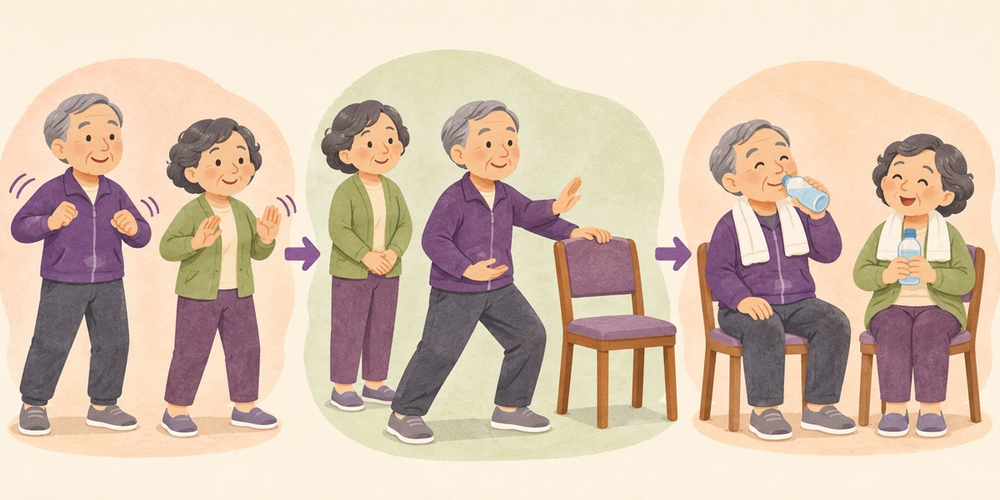

聰動衛教｜動得安全，走得穩

動得安全，走得穩
給南區鬱金香群組的朋友：規律活動可幫助部分巴金森病友維持平衡與日常功能。開始之前，先選安全環境與適合自己的方式，不必追求動作大或蹲得低。
① 先暖身，再慢慢動：先做小幅度活動，伸展輕柔，不彈震、不拉痛。膝蓋與腳尖朝同一方向，旁邊保留穩固椅子或扶靠；疼痛、頭暈或站不穩，就先停下來。
② 居家防跌先整理：走道保持明亮、清空雜物與電線，穿合腳防滑鞋。轉彎分小步慢慢走，避免腳掌固定、身體硬轉；需要時請家人陪伴。
③ 藥照醫囑，變化記下來：不要自行停藥或改劑量。把藥效較好、動作變慢或不舒服的時間記下，回診時提供醫師參考；活動盡量安排在自己狀況較穩定的時段。
太極拳是運動與復健的選項之一，不能治癒巴金森病，也不能取代藥物與回診。想開始練習，可先與醫師或物理治療師討論，再依老師指導調整。
休息時，歡迎坐穩欣賞五支擬真風景導覽；也歡迎了解聰動會員服務、太極課程，以及 12/5 高雄長庚「照亮心方向，與巴金森同行」活動。
💡 先把安全準備做好，再選一個今天做得到的小步驟。
出處：聰動官網課程與衛教資訊；Parkinson’s Foundation／ACSM 運動建議、NHS 站立運動衛教、NEJM 太極拳臨床試驗、WHO。